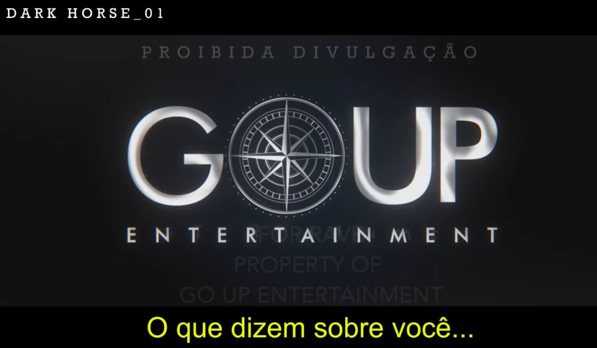

Wifi, Dark Horse, Vorcaro e Flávio Bolsonaro
Vocês já devem saber do esquema do Banco Master e do Flávio Bolsonaro ligando para Daniel Vorcaro pedindo um pix para financiar o já clássico filme Dark Horse. Mas o Intercept revelou um esquema envolvendo pontos de wifi gratuitos em São Paulo. Vamos nessa.
Veja no canal:

-
Um breve resumo do esquema do banco Master:
- Daniel Vorcaro assume o controle em 2020
- O Banco expande sua carteira e captação rapidamente oferecendo investimentos, por exemplo CDBs, que pagavam muito acima do mercado (suspeito)
- Vorcaro mantém contato próximo com operadores do mercado, banco central e com diversos políticos
- Ligação com Ibaneis Rocha e o Banco de Brasília
- Encontros com Roberto Campos Neto do BC
- Um encontro fora da agenda do planalto com Lula e Galípolo
- a representação do Banco Master por Viviane Barci de Moraes esposa de Alexandre Moraes
- Depois que vazou o celular então…
- As ligações escusas e o lastro duvidoso das operações começam a chamar atenção já no início de 2025, e daí yadda yadda ele foi liquidado em Novembro de 2025. O FGC foi liberado pra quem tinha investimento e etc… vocês devem saber da maioria disso
- Inclusive isso também deu uma boa sacudida nesse mundo de fintechs com investimentos que pagam suspeitamente bem e diversas estavam ligadas ao grupo
https://olhardigital.com.br/2026/02/18/pro/quais-bancos-e-fintechs-faziam-parte-do-ecossistema-do-banco-master/
-
No fim o Vorcaro está sendo o grande boi de piranha da história (coitada, viado, tadinhaaaa) e durante a investigação teve o tratamento de Lava Jato
- nós tivemos o vazamento do celular dele, com direito a sexting cringe e tudo
-
Como parte do vazamento e com o lançamento do filme Dark Horse chegando cada vez mais perto nós fomos presenteados com o áudio maravilhoso de Flávio Bolsonaro pedindo com aquele jeitinho pro Vorcaro transferir dinheiro pra financiar o filme
https://www.intercept.com.br/2026/05/13/audio-flavio-negociou-vorcaro-milhoes/
- 134 milhões de reais pra gente ter essa qualidade:

-
O vilão é um barbudo esquerdomacho que toca tambor e planeja matar o Bolsonaro senão ele vai ganhar a eleição. E tudo aparentemente acaba triunfante no 8 de Janeiro
-
Bacurau (7Mi), Agente Secreto (28Mi), Ainda Estou Aqui (9Mi)
-
Com vários relatos de irregularidades trabalhistas (atraso de pagamento, agressões, atores sem acesos a banheiro e comida) e produzido pela GOUP Entertainment
/https://i.s3.glbimg.com/v1/AUTH_da025474c0c44edd99332dddb09cabe8/internal_photos/bs/2026/W/V/Sw5MLLRwq9sEHg4JBVjQ/darkhorse.png)

- E onde a Wifi entra na história? Vamos dar uma olhada no trabalho do Intercept na série ‘Vaza Flávio’
https://www.intercept.com.br/especiais/vaza-flavio/
- E agora nós temos a máteria com o título mais debochado do mês: NÃO EXISTE WIFI GRÁTIS.
Dados pessoais de quem se conecta em pontos de Wi-Fi público na cidade de São Paulo podem ser usados para o disparo em massa de mensagens, inclusive com fins eleitorais. É o que revelam documentos obtidos pelo Intercept Brasil sobre o contrato milionário firmado entre a prefeitura administrada por Ricardo Nunes, do MDB, e a ONG Instituto Conhecer Brasil, o ICB.
- O que tem a ver essa história com Vorcaro, Flávio B. e Dark Horse?
/https://i.s3.glbimg.com/v1/AUTH_da025474c0c44edd99332dddb09cabe8/internal_photos/bs/2025/W/l/WAvPKeTdGzzGe24czQfA/whatsapp-image-2025-12-15-at-22.27.40.jpeg)
-
Breve resumo do esquema da wifi:
- Karina Ferreira da Gama a dona da Go Up, já tem trânsito com o governo Bolsonaro desde 2019 e durante a pandemia conheceu Mário Frias que compartilhou seu sonho de fazer um filme sobre o Bolsonaro (será que ele queria ser o Bolsonaro?)
- Em 2022 a empresa da Karina presta serviços pra campanha do Mário Frias
- Em Junho de 2024 a gestão de Ricardo Nunes na Prefeitura de São Paulo assina um contrato de R$ 108 milhões com o Instituto Conhecer Brasil (ICB), de Karina Gama, para instalar 5.000 pontos de Wi-Fi, apesar da falta de experiência da ONG no setor.
- Enquanto isso tá rolando Mário Frias envia um áudio a Daniel Vorcaro agradecendo pelo apoio financeiro ao Dark Horse
- Daniel Vorcaro é preso no final de 2025
- Dois anos após o contrato inicial, apenas 3.200 pontos de Wi-Fi foram instalados. O contrato sofreu aditivos, subindo para R$ 157 milhões. A Polícia Civil realiza operações de busca e apreensão na Prefeitura de São Paulo e em endereços ligados a Karina Gama.
-
Voltando pro: ‘Não tem WI FI grátis’
A organização, que venceu uma licitação em junho de 2024 sem experiência prévia com Wi-Fi, é comandada por Karina Ferreira da Gama, dona da Go Up Entertainment e produtora executiva do filme “Dark Horse”, a cinebiografia do ex-presidente Jair Bolsonaro.
O Intercept apurou que, após firmar um contrato de R$ 108 milhões com a Prefeitura de São Paulo, o ICB contratou uma empresa terceirizada chamada Talk Communications, por cerca de R$ 2,7 milhões, para realizar disparos em massa de mensagens e “marketing digital” visando a promoção do serviço.
…
Embora o contrato não cite o termo “disparos em massa”, o acordo firmado pelo ICB com a Talk incluía a realização de 12 campanhas com volume estimado de 675.505 mensagens em cada uma delas, o que equivaleria a 8,1 milhões de disparos – a cidade de São Paulo tem 11,4 milhões de habitantes, segundo o Censo de 2022 do Instituto Brasileiro de Geografia e Estatística, o IBGE.
…
Ou seja, na prática a subcontratação da empresa terceirizada significa que dinheiro público do município de São Paulo não teria sido usado apenas para garantir a instalação dos pontos de Wi-Fi e o acesso à conexão de internet, mas também para fazer propaganda de uma ação da gestão do prefeito enquanto ele era candidato.
-
Resumão do Dark Horse, WI FI, família Bolsonaro e Vorcaro
- A principal suspeita é de que parte dos R$ 26 milhões pagos a mais pela Prefeitura de São Paulo (superfaturamento) tenha sido desviada para financiar a produção do filme ou a estrutura das empresas de Karina.
- A Polícia e o Tribunal de Contas (TCM) investigam o direcionamento do edital, a falta de expertise do ICB e o valor exorbitante: a prefeitura paga R$ 1.800 mensais por ponto, enquanto a empresa pública Prodan cobra R$ 230 pelo mesmo serviço.
- O STF, sob relatoria de Flávio Dino, apura o repasse de R$ 5 milhões em emendas de deputados do PL (como Mário Frias, Bia Kicis e Carla Zambelli) para as entidades de Karina Gama, configurando possível conflito de interesses.
- A Polícia Federal investiga o fundo Heavengate, sediado no Texas e administrado por Paulo Calisto, advogado de Eduardo Bolsonaro. Suspeita-se que o dinheiro de Vorcaro passou por esse fundo e por braços americanos da produtora antes de chegar ao Brasil, possivelmente para ocultar sua origem ou destino.
-
Gostaram ou acharam pouco? Então peguem aí a sua WI FI gratuita da prefeitura de São Paulo e sintonizem numa plataforma de streaming gringa pra verem a estréia de Dark Horse!